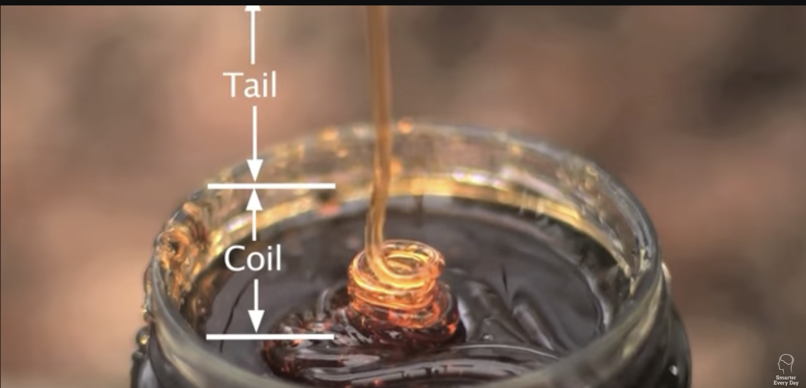

Rope-Coil Effect in Viscous Fluids
YT: Amazing Honey Coiling High Speed Video! - Smarter Every Day 53
When a very viscous liquid like honey is poured, a growing column of liquid coils begin to emerge from above the surface of the honey in an effect referred to as the liquid rope-coil effect. Here's a really detailed explanation of the phenomenon: https://buff.ly/34Lvgsh

Figure 1: Rope-Coil Effect in Viscous Fluids
As the fluid falls, it pushes the fluid that is at the bottom. i.e. the fluid that has hit the bottom has to move out of the way. This creates a coiling effect.